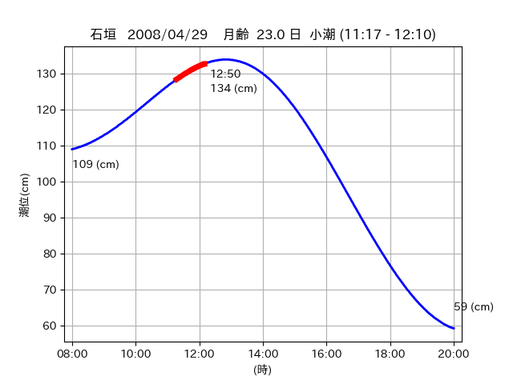

<!DOCTYPE html>
<html>
<head>
    
    <meta http-equiv="content-type" content="text/html; charset=UTF-8" />
    
        <script>
            L_NO_TOUCH = false;
            L_DISABLE_3D = false;
        </script>
    
    <style>html, body {width: 100%;height: 100%;margin: 0;padding: 0;}</style>
    <style>#map {position:absolute;top:0;bottom:0;right:0;left:0;}</style>
    <script src="https://cdn.jsdelivr.net/npm/leaflet@1.9.3/dist/leaflet.js"></script>
    <script src="https://code.jquery.com/jquery-3.7.1.min.js"></script>
    <script src="https://cdn.jsdelivr.net/npm/bootstrap@5.2.2/dist/js/bootstrap.bundle.min.js"></script>
    <script src="https://cdnjs.cloudflare.com/ajax/libs/Leaflet.awesome-markers/2.0.2/leaflet.awesome-markers.js"></script>
    <link rel="stylesheet" href="https://cdn.jsdelivr.net/npm/leaflet@1.9.3/dist/leaflet.css"/>
    <link rel="stylesheet" href="https://cdn.jsdelivr.net/npm/bootstrap@5.2.2/dist/css/bootstrap.min.css"/>
    <link rel="stylesheet" href="https://netdna.bootstrapcdn.com/bootstrap/3.0.0/css/bootstrap-glyphicons.css"/>
    <link rel="stylesheet" href="https://cdn.jsdelivr.net/npm/@fortawesome/fontawesome-free@6.2.0/css/all.min.css"/>
    <link rel="stylesheet" href="https://cdnjs.cloudflare.com/ajax/libs/Leaflet.awesome-markers/2.0.2/leaflet.awesome-markers.css"/>
    <link rel="stylesheet" href="https://cdn.jsdelivr.net/gh/python-visualization/folium/folium/templates/leaflet.awesome.rotate.min.css"/>
    
            <meta name="viewport" content="width=device-width,
                initial-scale=1.0, maximum-scale=1.0, user-scalable=no" />
            <style>
                #map_04dda63a2e4a0ab73ffea9af802ecab4 {
                    position: relative;
                    width: 2048.0px;
                    height: 1600.0px;
                    left: 0.0%;
                    top: 0.0%;
                }
                .leaflet-container { font-size: 1rem; }
            </style>
        
</head>
<body>
    
    
            <div class="folium-map" id="map_04dda63a2e4a0ab73ffea9af802ecab4" ></div>
        
</body>
<script>
    
    
            var map_04dda63a2e4a0ab73ffea9af802ecab4 = L.map(
                "map_04dda63a2e4a0ab73ffea9af802ecab4",
                {
                    center: [24.467, 123.801],
                    crs: L.CRS.EPSG3857,
                    ...{
  "zoom": 12,
  "zoomControl": true,
  "preferCanvas": false,
}

                }
            );

            

        
    
            var tile_layer_279cf6bf4160cd139edaa4b14813a0eb = L.tileLayer(
                "https://cyberjapandata.gsi.go.jp/xyz/seamlessphoto/{z}/{x}/{y}.jpg",
                {
  "minZoom": 0,
  "maxZoom": 18,
  "maxNativeZoom": 18,
  "noWrap": false,
  "attribution": "\u5730\u7406\u9662\u5730\u56f3",
  "subdomains": "abc",
  "detectRetina": false,
  "tms": false,
  "opacity": 1,
}

            );
        
    
            tile_layer_279cf6bf4160cd139edaa4b14813a0eb.addTo(map_04dda63a2e4a0ab73ffea9af802ecab4);
        
    
            var marker_ae0af02018c6005ab5dfe44c04f532d5 = L.marker(
                [24.4716, 123.8021],
                {
}
            ).addTo(map_04dda63a2e4a0ab73ffea9af802ecab4);
        
    
            var icon_c13730722ea10d8b37d86e6ed8085024 = L.AwesomeMarkers.icon(
                {
  "markerColor": "orange",
  "iconColor": "white",
  "icon": "info-sign",
  "prefix": "glyphicon",
  "extraClasses": "fa-rotate-0",
}
            );
        
    
        var popup_619f1c86b9304eb2216fb3a318fffe7e = L.popup({
  "maxWidth": "100%",
});

        
            
                var html_8f65a2832fae698920901454e39f77f9 = $(`<div id="html_8f65a2832fae698920901454e39f77f9" style="width: 100.0%; height: 100.0%;"><table><tr><td></td></tr><tr><td><center>20080429 No.1 </center></table></td></tr></table</div>`)[0];
                popup_619f1c86b9304eb2216fb3a318fffe7e.setContent(html_8f65a2832fae698920901454e39f77f9);
            
        

        marker_ae0af02018c6005ab5dfe44c04f532d5.bindPopup(popup_619f1c86b9304eb2216fb3a318fffe7e)
        ;

        
    
    
                marker_ae0af02018c6005ab5dfe44c04f532d5.setIcon(icon_c13730722ea10d8b37d86e6ed8085024);
            
    
            var poly_line_1fd8eebeb6d0e920c62ec5cc6e1676a4 = L.polyline(
                [[24.4716, 123.8021], [24.4784, 123.8006]],
                {"bubblingMouseEvents": true, "color": "#FF00FF", "dashArray": null, "dashOffset": null, "fill": false, "fillColor": "#FF00FF", "fillOpacity": 0.2, "fillRule": "evenodd", "lineCap": "round", "lineJoin": "round", "noClip": false, "opacity": 1.0, "smoothFactor": 1.0, "stroke": true, "weight": 3}
            ).addTo(map_04dda63a2e4a0ab73ffea9af802ecab4);
        
    
            var marker_1ab6881b06c15959f0f8f919b92788cf = L.marker(
                [24.476, 123.8028],
                {
}
            ).addTo(map_04dda63a2e4a0ab73ffea9af802ecab4);
        
    
            var icon_4663eba06b6b2b5378a06d705ff65795 = L.AwesomeMarkers.icon(
                {
  "markerColor": "orange",
  "iconColor": "white",
  "icon": "info-sign",
  "prefix": "glyphicon",
  "extraClasses": "fa-rotate-0",
}
            );
        
    
        var popup_b760cc69e5c4d0a89cd93835457f87e3 = L.popup({
  "maxWidth": "100%",
});

        
            
                var html_60f6213ca83f6aa7cd378def5a3e8d1e = $(`<div id="html_60f6213ca83f6aa7cd378def5a3e8d1e" style="width: 100.0%; height: 100.0%;"><table><tr><td></td></tr><tr><td><center>20080429 No.2 </center></table></td></tr></table</div>`)[0];
                popup_b760cc69e5c4d0a89cd93835457f87e3.setContent(html_60f6213ca83f6aa7cd378def5a3e8d1e);
            
        

        marker_1ab6881b06c15959f0f8f919b92788cf.bindPopup(popup_b760cc69e5c4d0a89cd93835457f87e3)
        ;

        
    
    
                marker_1ab6881b06c15959f0f8f919b92788cf.setIcon(icon_4663eba06b6b2b5378a06d705ff65795);
            
    
            var poly_line_93dfad50a38b1ddda1772a3e2e61d1c7 = L.polyline(
                [[24.476, 123.8028], [24.4835, 123.8075]],
                {"bubblingMouseEvents": true, "color": "#FF00FF", "dashArray": null, "dashOffset": null, "fill": false, "fillColor": "#FF00FF", "fillOpacity": 0.2, "fillRule": "evenodd", "lineCap": "round", "lineJoin": "round", "noClip": false, "opacity": 1.0, "smoothFactor": 1.0, "stroke": true, "weight": 3}
            ).addTo(map_04dda63a2e4a0ab73ffea9af802ecab4);
        
    
            var marker_6abb6cd3bd541bde7eb2fc53ad9539c1 = L.marker(
                [24.4648, 123.8008],
                {
}
            ).addTo(map_04dda63a2e4a0ab73ffea9af802ecab4);
        
    
            var icon_fb8bd72eb9c2278aa12612780fd32e81 = L.AwesomeMarkers.icon(
                {
  "markerColor": "orange",
  "iconColor": "white",
  "icon": "info-sign",
  "prefix": "glyphicon",
  "extraClasses": "fa-rotate-0",
}
            );
        
    
        var popup_8b3937ba5e7e8c5260060aba2e60ec59 = L.popup({
  "maxWidth": "100%",
});

        
            
                var html_745bd29870f4bcf1ff95c1b3b851099d = $(`<div id="html_745bd29870f4bcf1ff95c1b3b851099d" style="width: 100.0%; height: 100.0%;"><table><tr><td></td></tr><tr><td><center>20080429 No.3 </center></table></td></tr></table</div>`)[0];
                popup_8b3937ba5e7e8c5260060aba2e60ec59.setContent(html_745bd29870f4bcf1ff95c1b3b851099d);
            
        

        marker_6abb6cd3bd541bde7eb2fc53ad9539c1.bindPopup(popup_8b3937ba5e7e8c5260060aba2e60ec59)
        ;

        
    
    
                marker_6abb6cd3bd541bde7eb2fc53ad9539c1.setIcon(icon_fb8bd72eb9c2278aa12612780fd32e81);
            
    
            var poly_line_647a5f9d40834e25bf165c787ac1f2ab = L.polyline(
                [[24.4648, 123.8008], [24.4696, 123.8014]],
                {"bubblingMouseEvents": true, "color": "#FF00FF", "dashArray": null, "dashOffset": null, "fill": false, "fillColor": "#FF00FF", "fillOpacity": 0.2, "fillRule": "evenodd", "lineCap": "round", "lineJoin": "round", "noClip": false, "opacity": 1.0, "smoothFactor": 1.0, "stroke": true, "weight": 3}
            ).addTo(map_04dda63a2e4a0ab73ffea9af802ecab4);
        
</script>
</html>